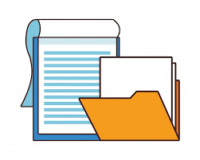

index
Me gusta por que es una materia fundamental porque permite comprender la relacion que existe entre las normas juridicas y la vida cotidiana de las personas, a traves de esta materia se aprende que el derecho no es solo es un conjunto
de leyes escritas, sino un sistema creado para regular la convivencia social, mantener el orden y garantizar la justicia dentro una comunidad, gracias a esta asignatura es posible entender como las leyes influyen directamente en nuetras
acciones, derechos y responsabilidades como ciudadanos.
Uno de los aspectos mas importantes de derecho y social es que me ayuda a conocer los derechos humanos y las garantias que protegen a todas las personas, esta materia me enseña que todos las personas tienen derechos por el simple hecho de ser personas,
como el derecho a la vida, a la educacion, a la libertad de expresion y a la igualdad; al mismo tiempo aprendo que tambien existen obligaciones que deben cumplirse para lograr una convivencia armoniosa y respetuosa dentro la sociedad.
Tambien esta materia me permite analizar como se organiza las sociedades atraves de leyes, normas y reglas. El derecho establece limites y orienta el comportamiento humano para evitar conflictos y resolverlos de manera pacifica cuando se presentan.
El derecho y sociedad ayuda a comprender la importancia de las instituciones, como el Estado, los tribunales y las autoridades, que se encargan de aplicar y hacer cumplir las leyes para proteger el bienestar comun.
Esta materia fomenta valores como la justicia, el respeto, la responsabilidad y la igualdad, al estudiar distintos casos y situaciones sociales, se aprende a reflexionar sobre lo que es correcto o incorrecto desde un punto de vista legal y moral. Esto contribuye
a formar ciudadanos conscientes, criticos y comprometidoscon su entorno social, capaces de expresar opiniones fundamentadas y de participar activamente en la mejora de su comunidad.
